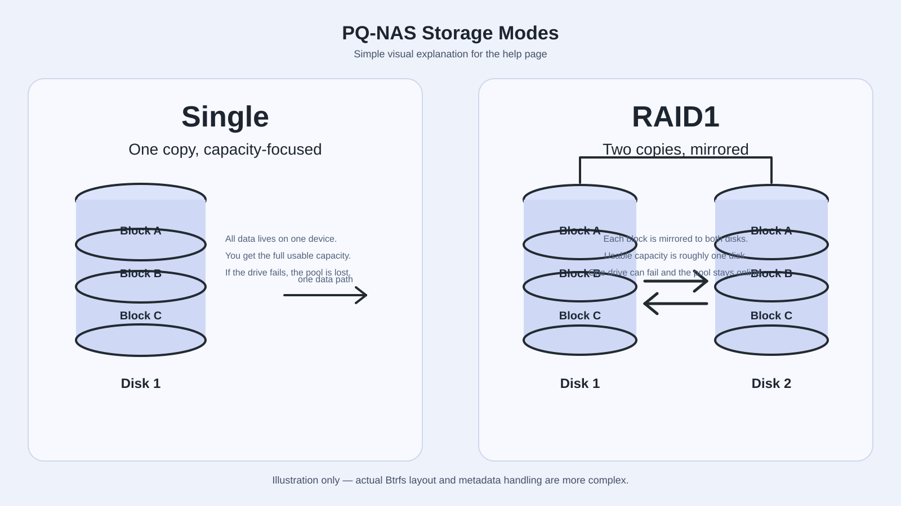

Storage Manager is used to create and maintain storage pools in PQ-NAS. It shows all pools, their slots, current member drives, usage summary, and management actions.
single and raid1.Slots are the saved PQ-NAS layout. Member drives are the drives currently attached to the live Btrfs pool.
These can temporarily differ. When they differ, Pool Manager shows a pending layout state. Use Apply layout to make the real pool membership match the saved layout.

Single Capacity-focused mode with no redundancy.
RAID1 Mirror-focused mode with redundancy across at least two devices.
Converting RAID mode may run a Btrfs balance and can take a long time depending on pool size and device speed.
Long-running operations Add, remove, and convert operations may take a long time.
Preview first When an action uses Preview and Apply, always preview before applying.
Destructive wipe Force wipe or destroy with wipe enabled can permanently erase data.
Be careful with old Btrfs signatures A disk that still contains old Btrfs metadata may look like a pool member even when it is no longer active.